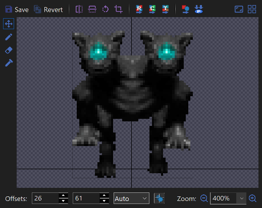
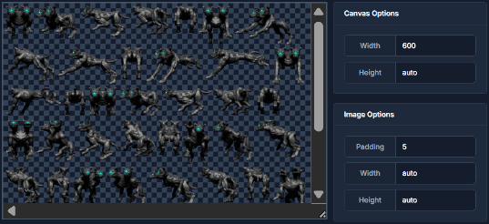
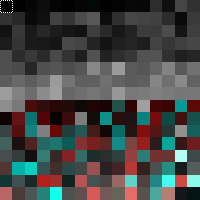
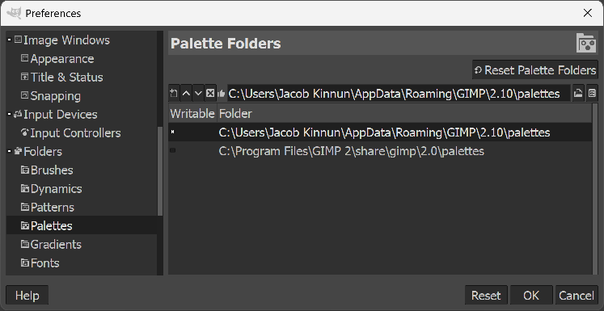
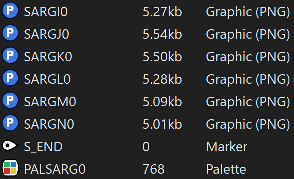

Monster Paletting
For some of the monster sprites, paletting is not necessary on PC engines. However, on consoles and for the monsters that have palette swaps (Zombies, Bull Demons, Imps, and Nobles) establishing a consistent palette across the sprites for a particular monster is necessary. The following sections will describe the paletting process in three steps.
The example monster sprites used here, the "Cyberdog", were made by Gerardo194 then edited by agony ZENITH and Immorpher and can be downloaded below.
1. Prepare Offsets and Sprite Sheet
First thing you will need to be aware off are the sprite offsets. In SLADE, sprite offsets are stored in the PNG images as an extra chunk. These offsets determine the positions of enemy sprites in-game on PC engines. However most graphics programs do not recognize this chunk and will remove it. So if your sprites already have offsets, make sure to back them up so you do not lose them after editing. You will need to retain or set these offsets for the monsters to show up properly on PC engines.

The next task is to determine a 256-color palette which will best represent the monster in all of its rotations and animations. Although you can manually choose the colors, it is quicker to have software automatically determine it. Typically to determine a palette automatically, you will need to generate a single image of all the sprites, known as a sprite sheet. The link below is an online tool to generate a sprite sheet.

2. Generate a Palette
You can use GIMP, Photoshop, or PNG Quant to generate a palette automatically of the sprite sheet. One caveat with automatic palette generation is lesser used but important colors (such as eye glows) can be culled depending on the software. However PNG Quant is better than most software in retaining important colors.
When a palette is generated, double check the color of the transparent color. For Doom 64 sprites, this color is set to black. This results in the fringes around sprites being slightly black and this is less noticeable than other colors.
In GIMP to edit a palette of an existing image, go to Windows -> Dockable Dialogues -> Colormap. GIMP won't show you which color is the transparent one but it is typically the first one.
In Photoshop to edit a palette, go to Image -> Mode -> Color Table. By clicking on the transparent color, it can be changed. Then using the eye dropper in the window, the color can be made transparent again. This window will also let you save the palette, so you can later batch palette the individual monster sprites.

SLADE can't import palettes from Photoshop, but it can import palettes from GIMP. To save a palette in GIMP, go to the Palettes tab. You'll see a palette called "Colormap of Image" followed by which image number it is. Right click on this palette and go to "Duplicate Palette" then give it a name. Now you will need to find the folder it will be saved in by going to Edit -> Preferences -> Folders -> Palettes. You will want to select the "AppData\Roaming" folder then click on the "Show file location in file manager" icon. Once GIMP is closed the palette will appear in the folder with the name you gave it.

3. Palette the Sprites
Next you will need to apply this palette to each individual monster sprite. This is the most time-consuming process unless your software will let you batch process it. Some programs may even scramble the order of colors which will cause issues later on. In Photoshop you can record a new action (Window -> Actions) where on a dummy image you will palette it (Image -> Mode -> Indexed Color) with the palette you have created. Then you can apply this action in the automate dialog (File -> Automate -> Batch) on a folder with the sprites. A program that could split the sprites from a sheet while retaining toe palette would be the best, but it does not seem to exist yet.
At this point, if the images had offsets set, likely the offsets are now removed so you will need to restore them. You can do that manually in SLADE for each sprite. Also by using a combination of SetPNG and OffsetSaver you can automatically re-add the offsets to a batch of sprites. The link below has both programs bundled together with a script.
Now you can import the sprites into SLADE. In a WAD place the sprites between the "S_START" and "S_END" lump markers. Then to import the palette, outside of any lump, create a new entry and select palette. Palettes must begin with "PAL" and can only be 8 characters long. In the example here, it is replacing the Bull Demon, so the palette is "PALSARG0". To update it with your custom palette, right click on the palette, go to "Palette -> Import From...". Switch the dialog to GIMP Palette and select your palette to import.

At this point, you have a paletted monster sprite for PC engines. To make palette swaps you will need to create a second version of the palette and edit it in the program of your choice. Then you can re-import it. In the example the Bull Demon converts to a Spectre with the PALSARG1 palette.